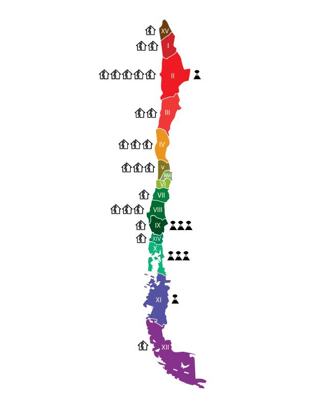

CHILE, un país que aprende
Es Chile capáz de reconstruirse luego de ser asotado por una catástrofe natural es la pregunta que nos hicimos al comienzo de este curso. Hoy les presentamos nuestro avance y visualizaciones gráficas de nuestro trabajo y conclusiones.
Inicio
Proyecto
Visualizaciones
A continuación les presentamos un mapa. Este mapa muestra tanto los terremotos y erupciones volcánicas ocurridas durante los útlimos 120 años. Haga "click" sobre alguno de los iconos y sepa más sobre el evento específico.
